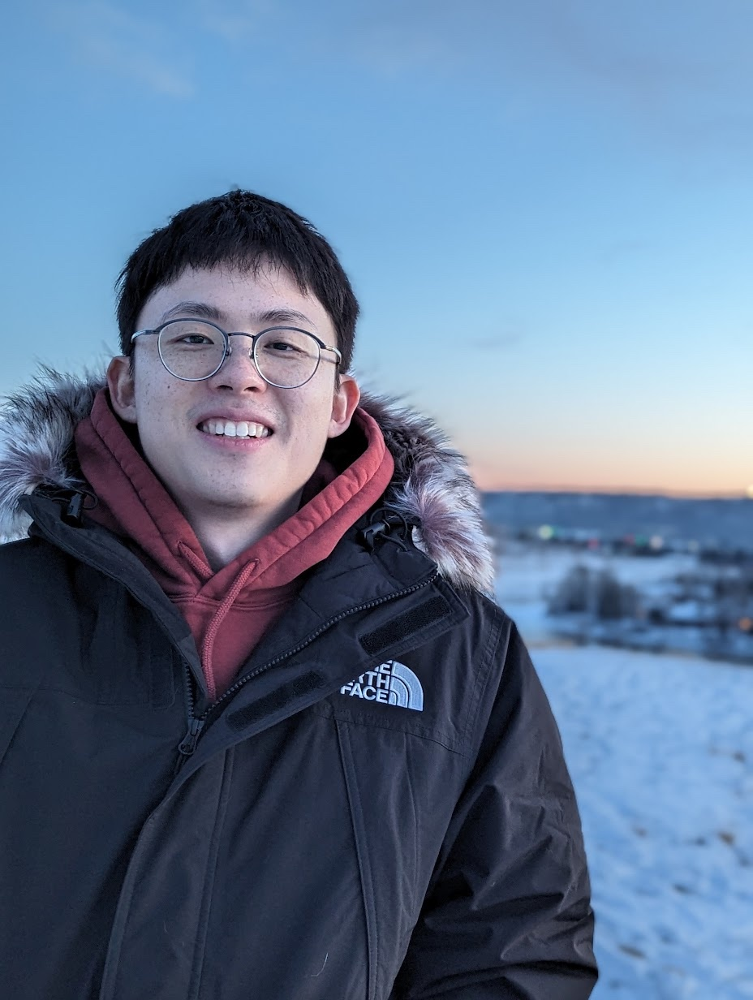
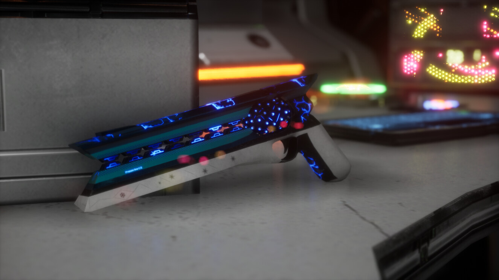
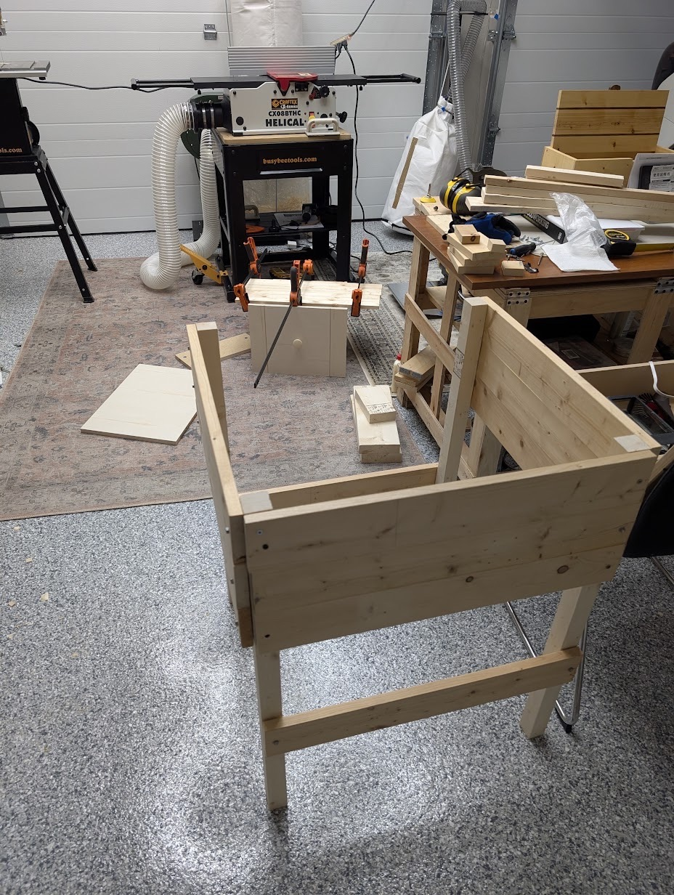

Wei Zeng
About me
Unreal Pipeline TD & Technical Artist — developer-minded, artist-hearted. I build the invisible machinery that lets artists ship, currently at WildBrain Studios, Vancouver.
View Work


Selected Work
Origins
Field recordings from the art years — hard surface, creatures, realtime materials.
About
Chemist by degree, TD by obsession — I love being the bridge between art and development.
I started in a lab coat — troubleshooting HPLC instruments and co-authoring nanoparticle research — then traded the bench for the viewport. The throughline never changed: diagnosing hard problems and handing the team a solution they can actually use.
Today I'm the Unreal Pipeline TD at WildBrain. The studio's pipeline framework was built by a colleague — I build the production tool layer on top of it: asset & shot importers, crowd VAT baking, light rigs, turntable scripted actions and a light mixer, dropping into C++ whenever Python runs out of road. The tools ship with UE 5.8, wired into ShotGrid, Perforce and the farm.
- BasedVancouver, BC, Canada
- FocusPipeline · Realtime · Tools UX
- Off-clockHard-surface modelling · game-jam tinkering